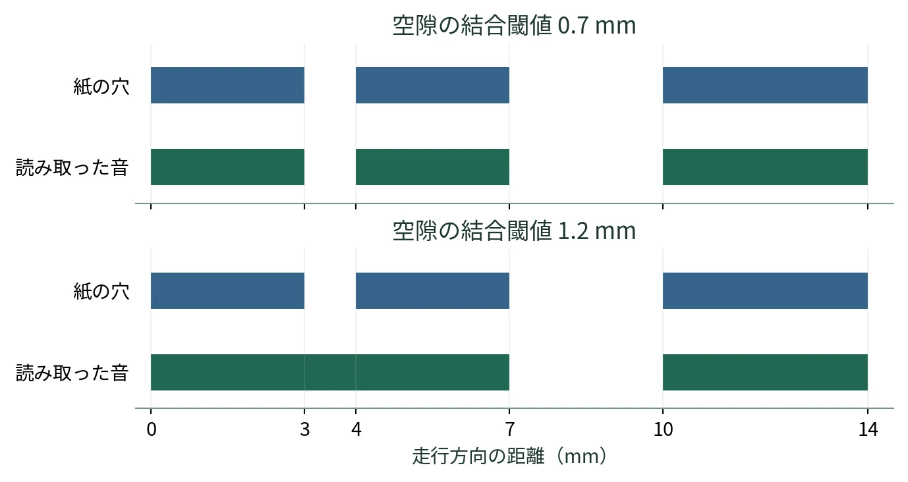

第54章 紙に穴を一つ開けたら、それは一音か
ピアノロールの穴から演奏を復元するとき、どこに解釈が入るか。
この章で学ぶこと
- 楽譜・ロール・録音がそれぞれ何を記録するかを比べる
- 紙の上の距離を時間に換算する
- 穴を一音にまとめる閾値で、結果が変わることを確かめる
ピアノロールを明るい窓にかざすと紙の穴が見える。一音につき一つの穴があると考えて読み始めると、長く保つはずの鍵から奇妙な連打が聞こえてしまう。スタンフォード大学のピアノロール・アーカイヴ（SUPRA）は、実際に一つの音を表す五つの穴を資料に掲げている。紙の繊維を残して帯の強度を保つ短い橋が、物体としての穴と、演奏上の一音とのあいだに入り込む。この橋は、楽譜から音を取り出す過程を考える格好の手掛かりになる。
同じワルツの三つの実物
ショパンの《ワルツ》変ト長調 作品70の1を開こう。ポーランド国立フリデリク・ショパン研究所のデジタル譜では1855年5月刊行のシュレジンガー版に由来するデータを読める。楽譜を狭い画面に合わせて組み直しても、音符の位置関係から小節と拍を読み取れる。小節内の空白を定規で測っても、奏者が何ミリ秒ためらったかは求まらない。紙面では音の相対的な長さを読むために音符の形を使うのに対し、機械で読むロールでは走行方向の実寸が経過時間に関わる。
この曲を弾いたファニー・ブルームフィールド＝ツァイスラーのロールが残る。ポーランド国立図書館は1908年8月6日の演奏記録に Welte-Mignon 1465 の番号を与えている。SUPRAで同じ番号の資料を開き、走行方向に沿って最初の音が並ぶ箇所と、帯の端寄りの穴を探す。音符に対応する列のほかに、低・高音域の強弱などを制御する情報がある。再生音を聞くときには、三拍を一つのまとまりとして拍を取り、各小節の先頭の間隔がいつ広がったと感じるかを記す。手元のファイルがスキャン・MIDI・音声のどの段階にあるかも併記する。「この演奏に残る間」と「この復元で聞こえる音色」では、立証に使う資料が違う。
紙の横軸から時間を復元する
一般のロールは幅方向が鍵の列、送り方向が時間に関係する。一定の送り速度 を仮定し、先端から測った距離を 、最初の基準点を とすれば、時刻は 。したがって同じ列の穴が20 mm隔たり、送り速度が毎秒50 mmなら、その先端どうしの時間差は0.40秒である。この計算は簡単だが、加速するリールを一定速度で扱うと、後半ほど元のタイミングからずれる。局所速度を位置の関数 としたときは、距離を微小区間に分け、その地点の速さで割った通過時間を加えて とする。SUPRAの資料には巻取りの加速を近似する方法まで明記されている。
やってみよう
紙でできる復元実験。 同じ鍵の列に、0〜3 mm、4〜7 mm、10〜14 mmの三つの穴を描く。隣接する穴のあいだが閾値未満なら同じ保持音へまとめるという規則を採用する。閾値0.7 mmなら三音。1.2 mmなら最初の隙間だけが埋まり二音。画像の解像度がどれほど高くても、同じ画素列から複数のイベント列を作れる。境目をどこに設けるかは、装置の応答と演奏について採用した仮説で決まる。

演奏の版を比較する
ひとつの教材用ワルツを作ってみる。右手でソ、ラ、シ、左手で各小節の最初だけドを弾く。最初のテイクは両手の最初の音を同時に出し、次は低音だけを少し先に弾く。二つのテイクを同じ譜面に清書できても、発音時刻を十分細かく記録したデータでは差が残る。逆に同じ開始時刻と長さの列をベルとピアノで再生すれば、出来上がる波形は異なる。この二つの実験で、どの表現からどの量が復元できるかが切り分けられる。音の標本化が保存する量とも比較したい。
研究用アーカイヴの「raw MIDI」は、中間結果を点検するために穴を個別のイベントにする。「expressive MIDI」では穴の結合や機構の寸法を考慮し、強弱の制御情報を解釈する。古い紙を高解像度で取り込むことで、むしろ異なる演奏仮説を試す余地が生まれる。明確な手順で再演できることと、それが歴史上の音響の一意な復元であることは、それぞれ異なる精度の主張である。
やってみよう
問いと解答。 上の三穴を1.2 mmで結合し、毎秒50 mmで送る。読取口を点とみなし、機械の遅れを無視すると、一音目の長さ、二音目までの無音、二音目の長さは何秒か。順に 秒、 秒、 秒。次に同じ紙を倍速で送れば三つとも半分になり、対応する鍵は変わらない。テープの速度変換で波形を丸ごと倍速にしたときの音高の変化と比較しよう。紙に保存された値が鍵の命令か、時々刻々の振動かによって、同じ速度変更から別の音楽操作が生まれる。
ここだけ押さえる
- 一音に複数の穴があることもある。穴＝一音ではない。
- 時刻＝距離÷送り速度。紙送りが加速するなら積分で求める。
- 手順どおりに再演できることと、歴史上の音を一意に復元することは別の主張。
この章の資料
- 「Linear spacing」と「Non-linear spacing」を切り替え、同じ小節の異なる組版を比べる。ショパン研究所《ワルツ》作品70の1
- Welte-Mignon 1465のスキャンと派生資料を開き、目録の項目195で演奏者・日付を照合する。スタンフォード大学所蔵ロール・ポーランド国立図書館の演奏資料目録
- 穴の輪郭を重ねた図、加速補正、raw と expressive の生成条件を読む。データセットから二形式の実ファイルも得られる。SUPRA の変換仕様・データの入手先